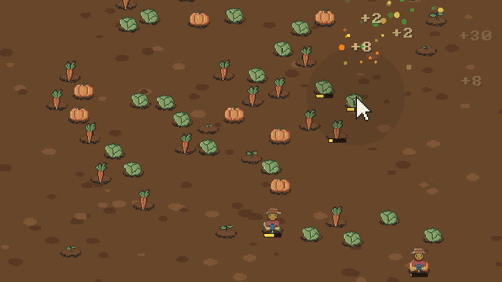

A tiny vegetable patch. A sun that sets far too soon. And a barn full of upgrades that turn a handful of lettuces into a field you can barely see the edges of.
IncraVegetable is a cosy incremental farming game. Each day you get a few seconds of sunlight to pick whatever's ripe. Hover over a vegetable and it's yours. When the sun goes down, take your coins to The Barn and spend them on upgrades, then wake up to a bigger, faster, busier farm.
How it plays
- Hover to harvest. No clicking, no frantic tapping: move the mouse over a ripe vegetable and hold it there for a moment. On a touchscreen, hold your finger on it.
- Race the sunset. The day/night dial in the top bar tells you how long you've got. When it's dark, the day's done.
- Spend it all in The Barn. 166 upgrades branch out from the barn like a snowflake. Every one is a single purchase, so there's always something just within reach.
- Watch it grow. Your patch goes from 2 x 2 to 30 x 30. Lettuces give way to carrots, pumpkins and turnips. Eventually you'll have help...
Upgrades include
- Bigger Patch and More Seeds: more room, more vegetables growing at once
- Longer Days: a little more picking time every day
- Quick Hands and Fertile Soil: pick faster, grow faster
- Carrots, Pumpkins and Turnips: slower to grow, much more valuable
- Prize Produce: every vegetable sells for more
- Wide Reach: pick everything in a circle around the pointer
- Head Start: part of the patch is already ripe at dawn
- Helping Hand: picking a vegetable sometimes picks its neighbours too
- Farmhands: hire farmers who walk the patch and pick for you
Also
- Three save slots, saved automatically (even mid-day)
- A stats page with time played, vegetables picked, best day and more
- Hand-made pixel art, swaying grass and a day that turns to dusk as you play
- About three hours to buy every upgrade
Controls